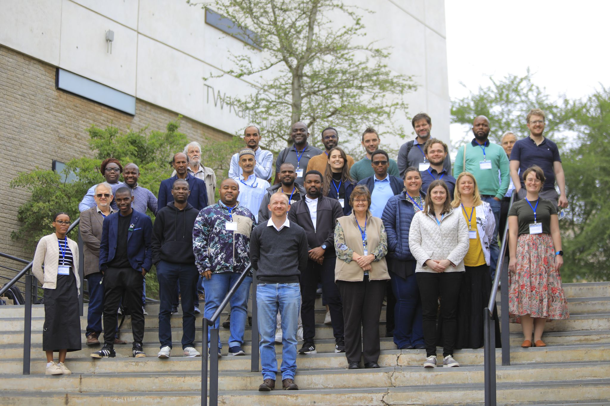
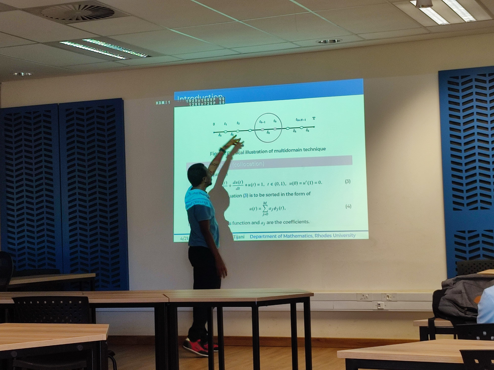

May 2025
Numerical Methods: The unsung heroes of scientific computing
Seminar series in the Department of Mathematics, Rhodes University, Makhanda, South Africa.
Invited seminars, conference presentations, and workshops on numerical methods, fluid dynamics, and computational mathematics.

Presenting at SANUM

Departmental Seminar
Seminar series in the Department of Mathematics, Rhodes University, Makhanda, South Africa.
46th South African Numerical and Applied Mathematics (SANUM) 2025, University of the Witwatersrand, South Africa.
67th Annual Congress of the South African Mathematical Society (SAMS), University of Pretoria, South Africa.
Seminar series in the Department of Mathematics, Rhodes University, Makhanda, South Africa.
16th Annual Workshop on Computational Mathematics and Modelling (WOCCOM2024), University of Kwazulu-Natal, Pietermaritzburg, South Africa.
Department of Mathematics and Applied Mathematics, Nelson Mandela University, Gqeberha, South Africa.
18th International Conference of Numerical Analysis and Applied Mathematics (ICNAAM), Rhodes, Greece.
35th Annual Conference of the Nigerian Mathematical Society, Federal University of Technology, Minna, Nigeria.